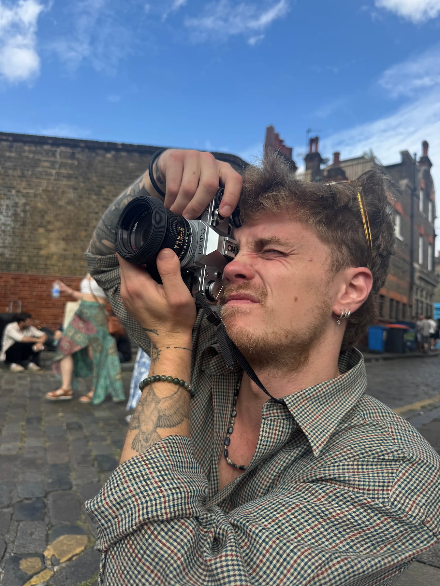

About Me
Harry Pockett is an English portrait and observational photographer based in South-West London, who's work explores humanity through a curious lens. Whether working on portraiture or documentary projects, or with a brand on developing their image, a calm, natural approach is taken to ensure results.
In an increasingly artificial world that's hungry for authenticity, it is Harry's desire to allow his work to mirror that hunger. Whether working on location for commercial clients or documenting an independent series, his approach remains grounded in simplicity and connection with those he works with.
